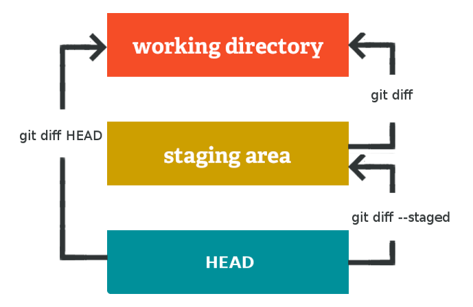

git version: 2.20 - Date: December 2018
Local Git State and changes

Manage local changes
Show changes between commits, commit and working tree 
Show the working tree status
git status
Add <file> contents to the index
git add <file>
Remove <file> from the index
git reset <file>
Add current contents of the index in a new commit
git commit -m 'subject' -m 'body'
Who changed what in git blame <file>
Remote
List all remotes repositories
git remote -v
Show information about remote
git remote show <remote>
Add new remote repository
git remote add <remote> <url>
Dowload all changes from git fetch <remote>
Download changes and integrate into HEAD
git pull <remote> <branch>
Publish changes on a remote
git push <remote> <branch>
Commit messages
- Limit the subject line to 50 characters:
<type>(<scope>): <summary>- <type>: chore, docs, feat, fix, refactor, style, or test.
- <scope>: optional
- <summary> present tense, imperative mood.
- Do not end the subject with a period
- Use the body to explain what, why and how
Tip: Separate subject from body with a blank line.
git commit -m 'subject' -m 'body'
Commit rules
- One commit for one task: if you have 2 tasks in one file you can use git add -p to chose which chunk to add
- Try to commit as often as possible
- Do not commit a half-done work.
- Commit a stable version: tests should not failed
Tag
Tag a commit
git tag <tag-name>